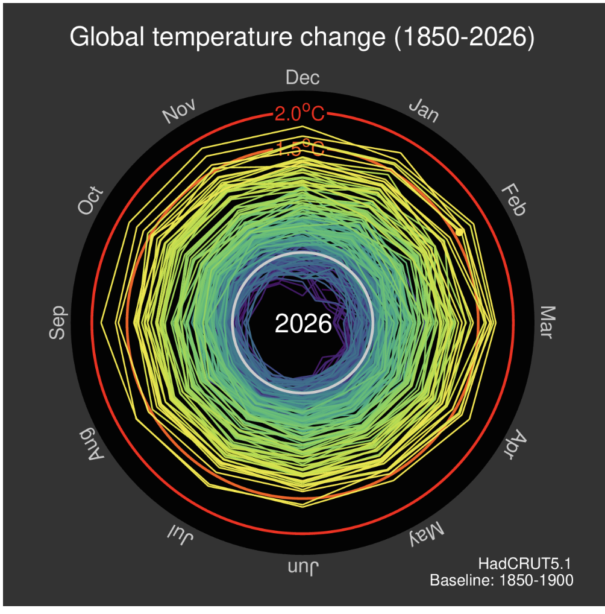

The subject is Ed Hawkins' animated climate spiral, first
posted on 9 May 2016 as an animated GIF. Each frame adds one month of
global mean surface temperature, drawn as a line that spirals outward. It
was made for the general public on social media, and it later reached
journalists, teachers and policymakers, including a worldwide audience at
the Rio 2016 Olympic opening ceremony. The critique uses the final frame
of the latest version, shown below.

Final frame of the latest climate spiral, "Global temperature change
(1850–2026)", HadCRUT5.1, baseline 1850–1900. Source: Ed Hawkins,
Climate Visuals: Climate spirals; original post:
Spiralling global temperatures, Climate Lab Book, 2016. CC BY-SA 4.0.
HadCRUT5.1 global mean surface temperature, monthly, from January
1850 (Met Office Hadley Centre / CRU). The 2016 original used
HadCRUT4.4, January 1850 – March 2016.
Baseline
Anomalies relative to the 1850–1900 mean, a proxy for
pre-industrial
License
CC BY-SA 4.0 (Climate Lab Book pages and images)
Description of the visualization
The angle shows which month. January is at the top and
months run clockwise.
Distance from the center is the temperature anomaly.
Warmer months sit farther out.
Color encodes the year, using the viridis colormap from
purple (1850s) through blue and green to yellow (2020s).
Animation adds one month per frame; a counter in the
center shows the current year.
Two red rings mark +1.5 °C and +2.0 °C, the
Paris Agreement limits.
2. Analysis
Intended message
Hawkins states the goal directly:
"The pace of change is immediately obvious, especially over the past few
decades. The relationship between current global temperatures and the
internationally discussed target limits are also clear without much
complex interpretation needed."
Viewers should notice four things:
Long-term trend: temperatures vary with little net
change until about 1910, rise to the 1940s, stay flat from the 1950s to
the 1970s, then climb steadily from 1980.
Acceleration: the loops expand faster in the last few
decades than in the first century.
The limit is crossed: the most recent loops have
crossed the 1.5 °C ring.
Notable events: sudden changes can be related to global
events, such as volcanic cooling from the 1880s to 1910, and the El Niño
peaks of 1998 and 2016.
Who is this visualization for?
Primary: the general public on social media. The
graphic was released as a shareable GIF on Twitter and a blog.
Secondary: journalists, teachers and policymakers. The
1.5 °C and 2.0 °C rings speak directly to the Paris Agreement
debate. The Rio 2016 ceremony took it to a global TV audience.
Data abstraction (Munzner's "what")
The dataset is a table, specifically a time series. It
has about … items (months), two key
attributes and one value attribute.
Attribute
Type
Ordering direction
Role
Channel used in the spiral
Month
Ordinal
Cyclic
Key
Angle (30° per month)
Year
Quantitative (ordered)
Sequential
Key
Color (viridis), animation time, center label
Temperature anomaly (°C)
Quantitative
Diverging around 0 (1850–1900 mean)
Value
Distance from center
Paris limits (1.5, 2.0 °C)
Reference values
—
Annotation
Red ring marks
The mark is a line connecting consecutive months. Its
outward drift carries the trend.
Tasks (Munzner's "why")
Munzner defines a task as an action paired with a
target. The spiral supports gist-level tasks well and
precise tasks poorly.
Viewer task
Munzner action and target
Example question
How well the spiral supports it
Take in the main story
Analyze: present / enjoy – all data
"Is the world warming?"
Well
Summarize the trend
Query: summarize – trend
"How much has it warmed since 1850?"
Direction yes, amount no
Compare now with the limits
Query: compare – values vs. reference
"How close are we to 1.5 °C?"
Well
Compare periods
Query: compare – trends
"Was 1910–40 warming as fast as post-1980?"
Poorly
Find notable events
Search: locate – outliers, features
"When were the El Niño spikes?"
Poorly
Read a single value
Query: identify – value
"What was the anomaly in early 1998?"
Poorly
3. Critique
Strengths
The spiral gets three things right. Each channel matches its attribute's
type, the rings give a built-in reference, and the animation suits a
storytelling task.
S1. Channels match attribute types (expressiveness)
Month is shown by angle. Month is cyclic, and angle is
a naturally cyclic channel. Joining December to the next January avoids
the break a linear axis creates at each year boundary. Munzner (Ch. 7)
notes that radial layouts suit periodic data.
Anomaly is shown by spatial position. The measured
value gets distance from the center, a spatial channel. Spatial position
ranks above every non-spatial channel in Munzner's ranking.
Year is shown with viridis. Year is ordered, so it
needs an ordered colormap. Viridis rises steadily in luminance, is
perceptually uniform, and stays readable for most color-blind viewers.
It passes Munzner's Get it right in black and white test: in
grayscale, dark still means early and bright means recent.
S2. Reference rings create a clear anchor and hierarchy
Relative, not absolute, judgment. The rings turn "how
close are we to the limit?" into a comparison against a fixed,
always-visible line. Relative judgments against a nearby frame are more
accurate than estimating a magnitude on its own.
Pop-out. Red is used only for the rings. Against the
black background and the cool viridis lines, they stand out immediately.
Visual hierarchy. The reading order is clear: data
lines first, then the limit rings, then the month labels. Reading in
reverse also works.
Why it matters: comparing now with 1.5 °C is one
of the two main messages, and the design lets the eye make that
comparison directly, without memory or a legend.
S3. Animation suits the "present" task
Narrative sequence. Munzner (Ch. 6,
Eyes beat memory) accepts animation for storytelling, where the
designer controls the order and the viewer only watches. The spiral is
exactly that case.
Time shown as time. One frame per month means viewers
watch a long period of slow change, then rapid outward growth at the
end. The acceleration is felt, not just read.
Redundant year encoding. Year is carried by three
channels at once: color, frame order and the center counter. This makes
time order hard to misread.
Why it matters: the goal was engagement and a single
memorable message. Its viral spread and its use at the Rio 2016 ceremony
show the goal was met.
Weaknesses
W1. The most important attribute gets the weakest channels (effectiveness)
Problem: the message is about change across years, yet
year is carried by color and animation. Both rank low in Munzner's
channel ranking (Ch. 5). Month, the least important attribute here, gets
angle, a spatial channel. Anomalies already remove the seasonal cycle,
so the periodic structure a radial layout shows best (Ch. 7) carries
almost no signal.
Why it matters: summarizing the trend and comparing
periods both depend on the year. A continuous color scale offers only a
handful of distinguishable steps. Viewers can separate "early" from
"recent" but not 1940 from 1960.
Improvement: put year on a spatial axis: time on x,
anomaly on y, a position-on-common-scale encoding. Month can become a
secondary view, or the data can be aggregated to annual means.
W2. Animation makes comparison depend on memory
Problem: to compare the 1940s with the 1990s, the
viewer must remember a frame that has already disappeared. Munzner's
Eyes beat memory rule (Ch. 6) states that comparing views
visible at the same time costs far less effort than comparing against
memory, and long animations invite change blindness. The GIF plays at a
fixed speed with no pause, scrub or speed control. A reader asked for a
time slider and a slower speed in the
blog comments
(24 May 2016).
Why it matters: Hawkins' own FAQ lists events viewers
should see, such as the 1877–78 El Niño and the 1998 spike. In the
animation they pass in a moment and are never labeled, so the "find
notable events" task fails.
Improvement: juxtapose rather than animate (Ch. 12):
show all years at once in a static overview. If animation is kept, add
play/pause and a year slider so the viewer controls time (Ch. 11), and
annotate the key events.
W3. Overplotting hides most of the record in the final frame
Problem: the last frame, the one people screenshot and
share, stacks … yearly loops in a
narrow ring. Later yellow loops are drawn on top and hide earlier ones.
Roughly 1850–1970 collapses into one dense purple-blue-green band.
Munzner (Ch. 12) notes that superimposed layers only work for a small
number of lines before clutter takes over.
Why it matters: the static view cannot answer "when did
warming begin?" or "how did 1900 compare with 1950?". It fails
Overview first, zoom and filter, details on demand (Ch. 6)
because the overview itself is unreadable.
Improvement: use Munzner's reduce idioms (Ch. 13).
Aggregate the months into annual means, or into decade bands. Add
select-and-highlight (Ch. 11) so one year is emphasized while the rest
fade.
W4. Missing context, and thresholds compared at the wrong time scale
No baseline or units: the graphic's only numbers are on
the red rings; the baseline appears only as small corner text.
No color legend: year order must be guessed. In the
final frame, the only year shown is the latest one in the center.
Rotated text: month labels follow the circle, so the
summer months appear upside down.
Mismatched time scale: the Paris limits refer to
long-term warming. The
IPCC later
defined it as a 30-year global average, to smooth out natural
year-to-year swings. The spiral plots single months against those rings,
so one El Niño month near the ring can be misread as "we hit
1.5 °C".
Improvement: add a subtitle such as "Monthly global
temperature vs. the 1850–1900 average (°C)". Add a year color legend and
keep all labels horizontal. Compare the thresholds against a smoothed
series, such as a 30-year running mean, and label the rings as long-term
limits.
4. Redesigned visualization
The D3.js redesign links a Cartesian timeline and a spiral through one
year slider, a Play/Pause button and one viridis year scale. It moves year
onto a spatial axis, keeps the spiral as a linked companion view you
control, and compares the thresholds against a 30-year average instead of
single months.
The data
Dataset: HadCRUT.5.2.0.0 global mean surface
temperature, monthly summary series (Met Office Hadley Centre and the
Climatic Research Unit, University of East Anglia).
Coverage: January 1850 to
…,
… months, loaded from the official CSV
at page load.
Baseline: the file is relative to 1961–1990. Every
value is shifted by … °C so that
0 °C is the 1850–1900 average, the same
pre-industrial baseline the spiral uses.
Derived values: annual means, and a 30-year centered
running mean, computed only where all 30 years are complete.
Global temperature since 1850
Monthly and annual global surface temperature, °C relative to the
1850–1900 average
Loading HadCRUT5 data…
TimelineSpiral
Source: Morice, C. P., Kennedy, J. J., Rayner, N. A., Winn, J. P.,
Hogan, E., Killick, R. E., et al. (2021). An updated assessment of
near-surface temperature change from 1850: the HadCRUT5 data set.
Journal of Geophysical Research: Atmospheres, 126, e2019JD032361.
https://doi.org/10.1029/2019JD032361
Note on the spiral: January is at the top and months run
clockwise. The center is −1 °C, so distance from the center is not
proportional to warming.
How to use it
Play / Pause (or the Space key) replays the spiral one
year at a time, as the original animation does.
Year slider (arrow keys work) moves the cursor in the
timeline and draws the spiral up to that year.
Drag across the timeline to select a range of years.
Those loops stay bright in the spiral and the rest fade.
Reset clears the selection.
Hover a year in either view to see its annual mean and
warmest month, highlighted in both views.
What it shows
The warmest complete year on record is
…, at
… °C.
… individual months have been above
1.5 °C, the first in …. The
30-year average, the time scale the Paris limit refers to, reached
… °C for the window centered on
…. It stops there because a centered
window needs 15 more complete years after its midpoint. Months above the
line do not mean the limit has been crossed.
5. Explaining the redesign
1. Year on a spatial axis (W1)
The main view is now a Cartesian timeline. Year is on the x-axis, the
anomaly relative to 1850–1900 is on the y-axis, each year is one
annual-mean dot, and a labeled 0 °C line marks the baseline. In the
original, year got only color and animation, while month got angle.
Position on a common scale ranks highest in Munzner's channel ranking (Ch.
5). Viewers can now read how much it warmed, when warming began, and
whether 1910–1940 rose as fast as the years after 1980.
2. Linked, viewer-controlled views (W2, keeps S3)
The timeline and a spiral sit side by side and share one year slider, a
Play/Pause button and one viridis year scale. Key events, from the 1877–78
El Niño to the 2016 El Niño, are labeled, and the warmest year is computed
from the data. The GIF made viewers compare against frames that had
already gone. Here both views stay visible, so the eye does the comparing
instead of memory (Ch. 6, Ch. 12). Play still grows the spiral like the
original, but viewers can stop at any year.
3. Aggregation and focus + context (W3)
The timeline shows … annual means instead
of … monthly values. Brushing a range of
years keeps those loops bright in the spiral and fades the rest to 15%
opacity. Hovering a year highlights it in both views. These are Munzner's
aggregate and select-and-highlight idioms (Ch. 13, Ch. 11). Together they
replace the original's single dense 1850–1970 band with a readable
overview.
4. Context and the right time scale (W4)
A subtitle states the units and baseline, one year legend serves both
views, month labels are upright, and the spiral's rings are labeled,
including 0 °C. A dashed 30-year running mean is drawn against the
1.5 °C and 2.0 °C lines, which keep red as their reserved hue
(S2). The IPCC defines these limits as 30-year averages, so this fixes a
data-abstraction problem (Ch. 4), not just an encoding one. In HadCRUT5.2,
… months have exceeded 1.5 °C
and … averaged
… °C, yet the 30-year average
reaches only … °C.
Original vs. redesign
The redesign makes four tasks easier: reading a value from the axis or
tooltip, comparing periods on one scale by brushing, finding labeled
events, and judging warming against the Paris limits with the 30-year
mean. The original still wins at grabbing attention at a glance.
The redesign has trade-offs. It needs interaction and is no longer a
single shareable image. The spiral's center is still −1 °C, so its
radial distortion remains; it was kept for engagement. The centered
30-year mean stops at …, and annual
means hide monthly extremes on the timeline. Finally, the page uses
HadCRUT5.2.0.0 while the 2026 original uses HadCRUT5.1, so values can
differ slightly.
References
Munzner, T. (2014). Visualization Analysis and Design. A K
Peters Visualization Series, CRC Press. ISBN-13: 978-1466508910.
Hawkins, E. (2016, May 9).
Spiralling global temperatures. Climate Lab Book, University of Reading. Includes the FAQ
and reader comments cited above.
Hawkins, E.
Climate spirals. Climate Lab Book. Covers later versions and the Rio 2016
ceremony.
Morice, C. P., Kennedy, J. J., Rayner, N. A., et al. (2021). An updated
assessment of near-surface temperature change from 1850: the HadCRUT5
data set. Journal of Geophysical Research: Atmospheres, 126,
e2019JD032361.
Morice, C. P., Kennedy, J. J., Rayner, N. A., & Jones, P. D. (2012).
Quantifying uncertainties in global and regional temperature change
using an ensemble of observational estimates: The HadCRUT4 data set.
Journal of Geophysical Research: Atmospheres, 117, D08101. Data
behind the 2016 original.
IPCC (2018). Global Warming of 1.5°C,
FAQ Chapter 1.
Source of the 30-year averaging definition.